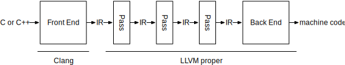
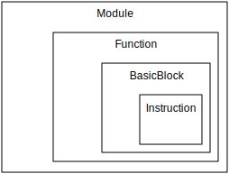

What Are LLVM Modules?¶
Introduction
LLVM programs are composed of Modules, each of which is a translation unit of
the input program. A translation unit is a single source file (e.g. file
.c) after preprocessing (all #includes are expanded, all macros are
expanded, all comments are removed, and the file is ready for tokenizing).
Basically, it is something that is compilable without external dependencies
until the linking step. [1]
Each module consists of functions, global variables, and symbol table entries .[2]
When are LLVM Modules Operated on?
The front end is where source code gets turned into source code. Don’t touch this.
The passes transform IR to IR. Typically, these transformations are optimizations, but this is where we want to do our deoptimizations.
The back end is where the machine code is generated. Dont’ touch this.
LLVM uses the same IR for all of the passes.[4]
LLVM Module
A Module represents a source file (or a translation unit)
Modules house Functions, which are executable code.
Functions contain BasicBlocks, which are continguous chunks of instructions.
Instructions are single code operations, roughly on the same level of RISC machine code.
Most things in LLVM (including the above) are C++ classes that inherit from a base class called Value. A Value is any data that can be used in a computation - a number or the address of some code, for example. Global variables and constants are also Values. [4]
How Do I Modify LLVM Modules?
Go to https://www.cs.cornell.edu/~asampson/blog/llvm.html. No, seriously. I’d just copy and paste what they say into here otherwise.
How Should I Continue This Documentation?
Start at https://www.cs.cornell.edu/~asampson/blog/llvm.html to somewhat familiarize yourself with what is going on. Then go to https://llvm.org/docs/LangRef.html and try to isolate what else is useful.
Also implement some of the examples from https://www.cs.cornell.edu/~asampson/blog/llvm.html and mess around with them to get a better understanding of how to manipulate LLVM.
Bibliography¶
[1] YakovYakov, “LLVM translation unit,”Stack Overflow. [Online]. Available: https://stackoverflow.com/questions/7146425/llvm-translation-unit. [Accessed: 18-Feb-2019].
[2] “LLVM Language Reference Manual,” The LLVM Target-Independent Code Generator - LLVM 8 documentation. [Online]. Available: https://llvm.org/docs/LangRef.html. [Accessed: 18-Feb-2019].
[3] “Clang 9 documentation,” Clang C Language Family Frontend for LLVM. [Online]. Available: https://clang.llvm.org/docs/Modules.html. [Accessed: 18-Feb-2019].
[4]”LLVM for Grad Students,” Object Recognition. [Online]. Available: https://www.cs.cornell.edu/~asampson/blog/llvm.html. [Accessed: 18-Feb-2019].